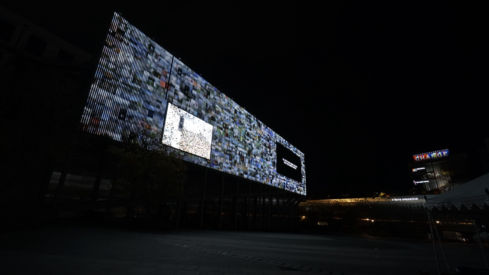
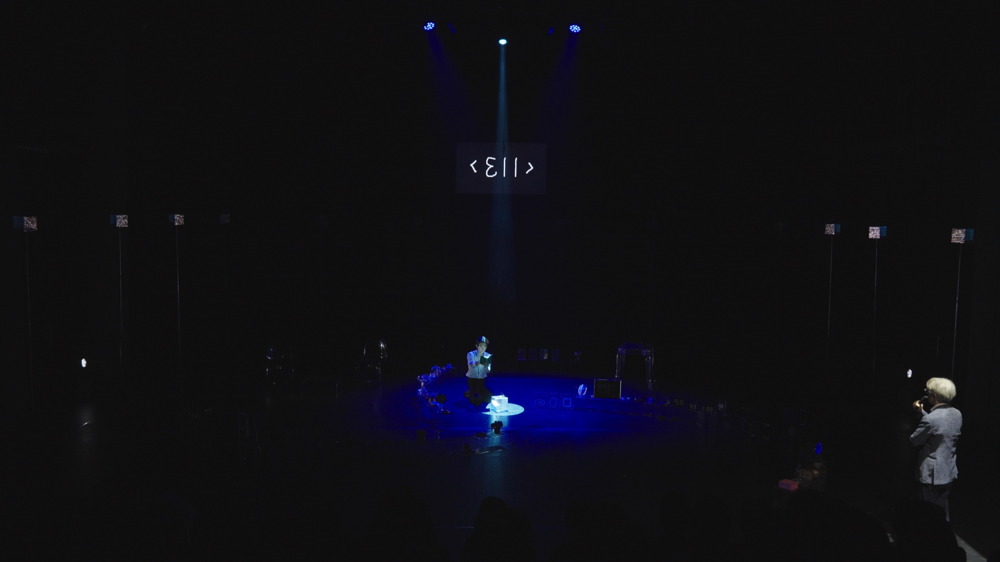
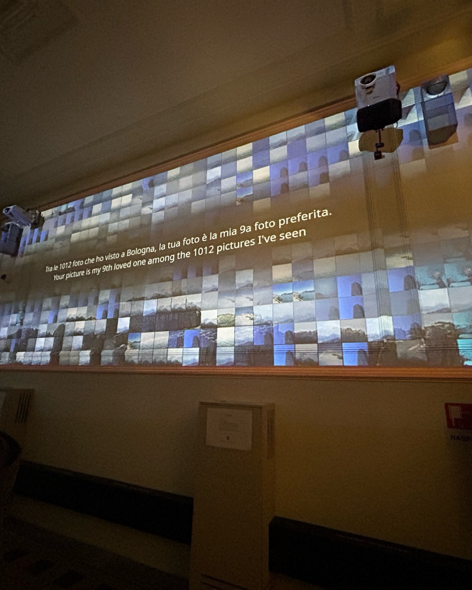
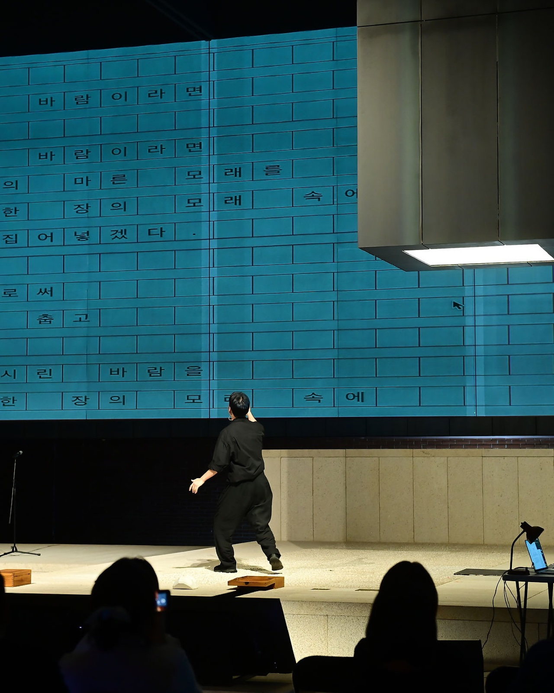
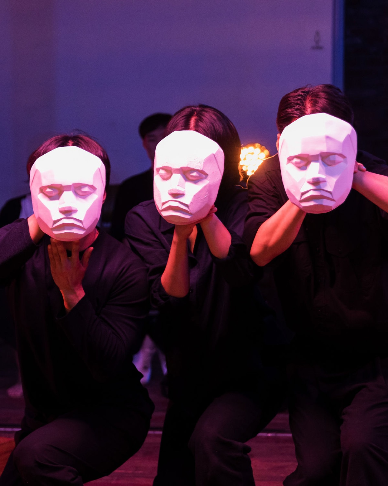
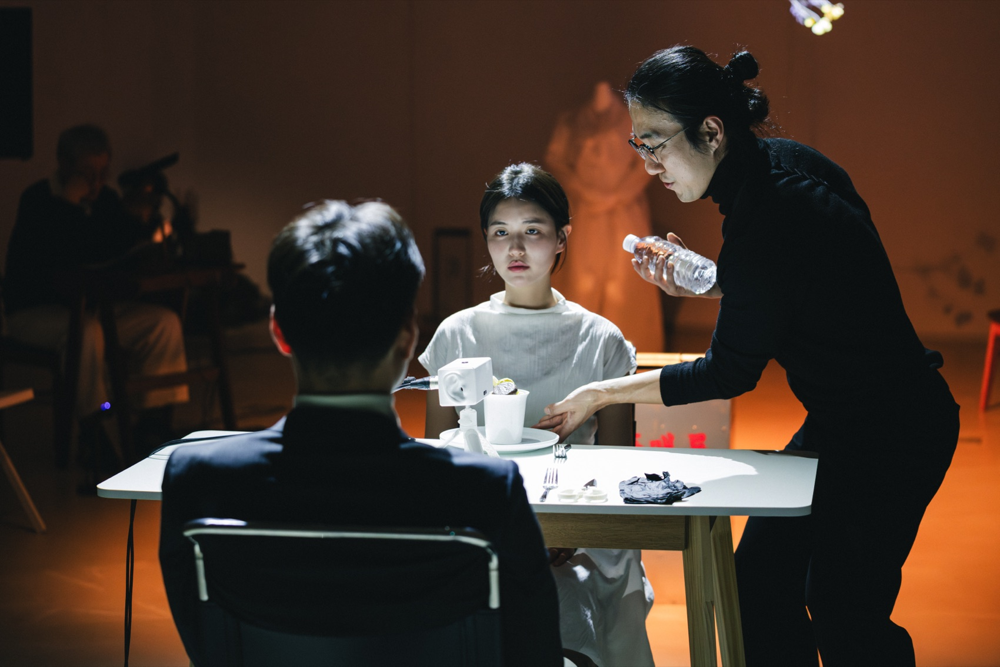
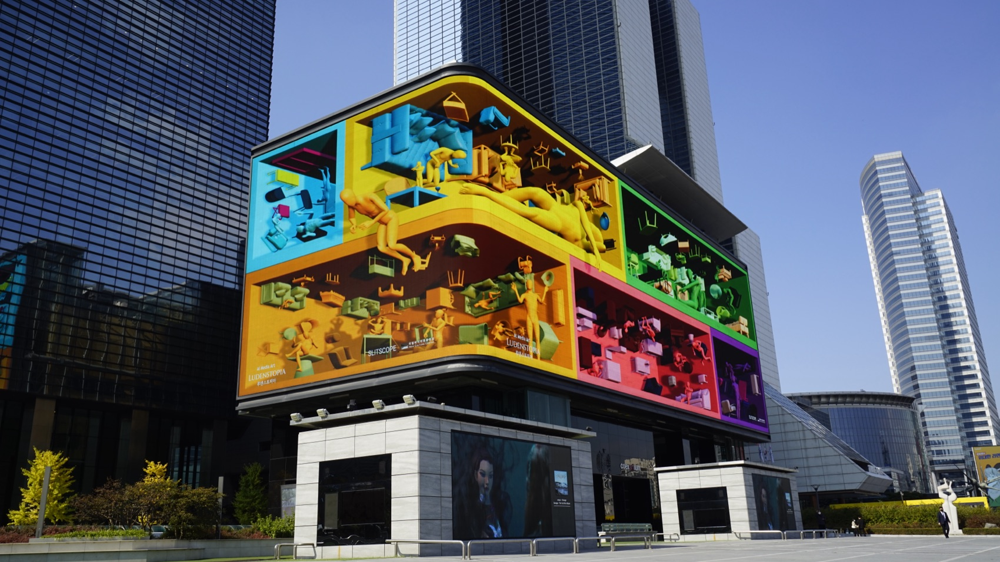

Performance
 2026
2026
2026
113
대학로극장 쿼드, 서울, 한국SFAC Theater QUAD, Seoul, Korea
 MMCA Cheongju, Korea — 2024
MMCA Cheongju, Korea — 2024

I Question — ACC Media Wall, Gwangju
113 — SFAC Theater QUAD, Seoul — 2026
Fondazione Innovazione Urbana, Bologna, Italy — 2024
Paphos 2.0 — Seosomun Shrine History Museum — 2023
Paphos 2.0 — KOTE, Seoul — 2023
Artist Statement
김제민(1979, 서울)은 연출가이자 미디어 작가로 활동 중이며 공연, 전시 등 다양한 장르와 형식으로 매체융합적인 작업을 하고 있다. 최근에는 인공지능으로 동시대 질문을 던지고, 인간에 대해 본질적 탐구를 한다. 예술과 과학의 관계 속에 주체와 객체, 가상과 실재, 포스트 휴먼에 관한 주제로 창작에서 발생하는 의미와 지각, 융합과 경계에서 포착되는 미학을 추구한다.
Kim JaeMin (b. 1979, Seoul) is a director and media artist whose practice crosses genres and forms — performance, exhibition and beyond — in media-convergent work. His recent projects pose contemporary questions through artificial intelligence, pursuing an essential inquiry into the human. Within the relation of art and science, he works on subject and object, the virtual and the real, and the posthuman — seeking the meaning and perception that arise in creation, and an aesthetics caught at the border of convergence.
2026
대학로극장 쿼드, 서울, 한국SFAC Theater QUAD, Seoul, Korea

2025서울시립 미술아카이브, 서울, 한국Seoul Museum of Art Archive, Seoul, Korea

20214X4WALLS, 코엑스 아티움미디어, 서울, 한국4X4WALLS, Coex Artium Media, Seoul, Korea, 2021